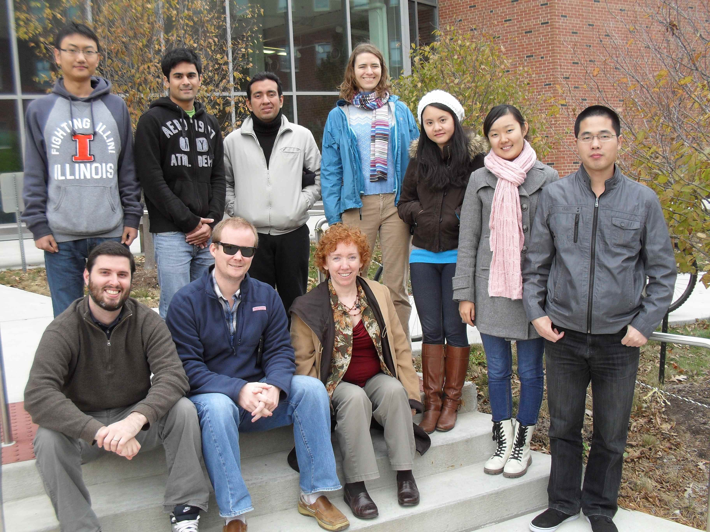
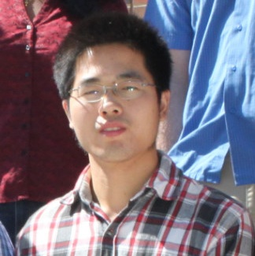

Research Group

{kind=link}
Graduate Programs include: EES, Informatics, EHHE and SRIS Photo taken at 2013/10
Barbara Minsker
My Research interests are to develop innovative systems approaches to improve sustainability and resilience of coupled human and natural system.
See more in CV
Current students
PhD students
2014 (expected), Ph.D., Informatics, Illinois Informatics Institute, UIUC
2012, M.S., Environmental Engineering, UIUC
2004, M.Eng., Operations Research and Industrial Engineering, Cornell University
2003, B.A., Mathematics, Economics, Cornell University

2015 (expected), Ph.D., Environmental Engineering and Science, UIUC
2011, M.S., Municiple Engineering, Southeast University, China
2009, B.S., Water supply and drainage Engineering, Southeast University, China.
2016 (expected), Ph.D., Environmental Engineering and Science, UIUC
2012, M.S., Hydraulic Engineering, Tsinghua University, China
2010, B.S., Hydraulic and Hydropower Engineering, Tsinghua University, China.
Samuel Rivera
srivera2@illinois.edu
Data Mining &
Knowledge discovery,
Machine Learning,
Sustainable Systems
2017(expected), Ph.D., Sustainable and Resilient Infrastructure Systems, UIUC, USA
2013, M.S., Sustainable and Resilient Infrastructure Systems, UIUC, USA
2011, B.S., Civil Engineering, University of Puerto Rico - Mayaguez Campus, Puerto Rico

2017(expected), Ph.D., Environmental Engineering and Science, UIUC
2010, M.E., Environmental Engineering, National Authonomous University of Mexico (UNAM), México.
2001, B.S., Civil Engineering, Catholic University of Santiago de Guayaquil (UCSG), Ecuador.
Master students
2014 (expected), M.S., Civil Engineering, Sustainable and Resilient Infrastructure Systems,
UIUC
2011, B.S., Earth Systems, Environment, and Society, UIUC
2014 (expected), M.S., Civil Engineering, UIUC, USA
2012, BTech Civil and Environmental Engineering, VJTI(Mumbai University), India.
2013 (expected), M.S., Environmental Engineering and Science, UIUC
2011, B.S., Water Supply and Drainage Engineering, Tongji University, China
Undergraduate students
2014 (expected), B.S., Civil and Environmental Engineering, UIUC
Past Students
2013
Evan Coopersmith (Ph.D). Thesis: Virtual Sensors for Real-Time Agricultural Decision Making
Andrea Zimmer (Ph.D). Thesis: Adaptive Real-time Management of Combined Sewer Overflows
Ankit Rai (M.S). Thesis: Green Stormwater Infrastructure Design for Human and Ecosystem Wellbeing
Samuel Rivera (M.S). Thesis: Tracking Sustainability Indicators through Text Mining
2011
Wesley Dawsey (M.S). Thesis: Bayesian Belief Networks
Brian Payne (M.S). Thesis: Assessing and Improving Watershed Sustainability: A Model-Based Approach
2010
Indu Chinta (M.S). Thesis: Model Fusion for improving Hypoxia Forecasts: A Study of Boosting and Historical Scenario Modeling
Before 2010
Gayathri Gopalakrishnan (Ph.D). Thesis: Subsurface Monitoring with Trees
Abhishek Singh (Ph.D). Thesis: Inverse Groundwater Modeling Using Interactinve Evolutionary Optimization
David Hill (Ph.D). Thesis: Machine Learning for Environmental Monitoring and Modeling
Andrew Collier (M.S). Thesis: Real-Time Environmental Visualization for Diverse User Communities
Evan Coopersmith (M.S). Thesis: Statistical and Machine Learning Approaches to Understanding Hypoxia in Corpus Christi Bay
See more in CV